ⓧ
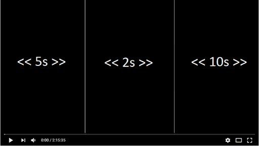 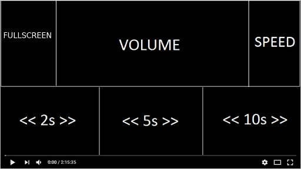
Mute with middle mouse click?
Volume change only
🛈
Seek backward/forward only (no Volume, no Popout)
🛈
Everything (Skip, Volume, & Popout)
🛈
Pop out Video
Picture-in-Picture
Fullscreen
Disable
Donate
 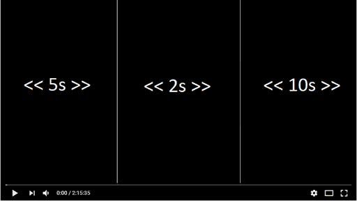
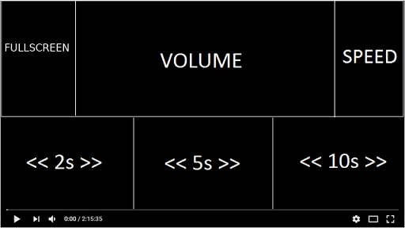
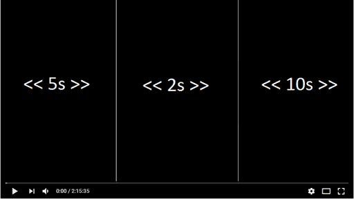
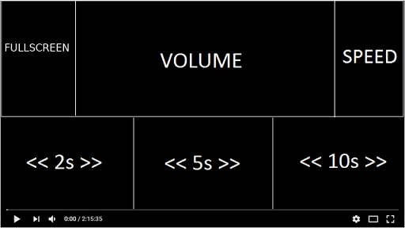
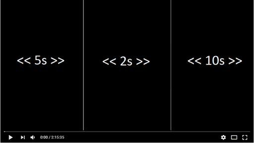
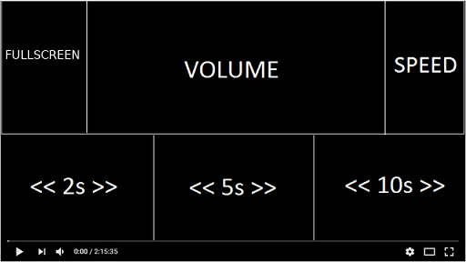
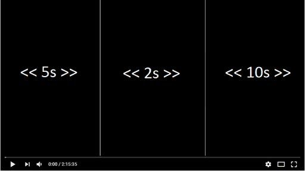
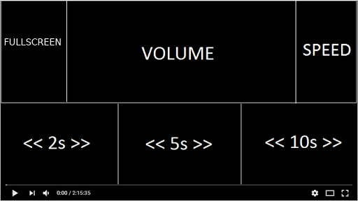
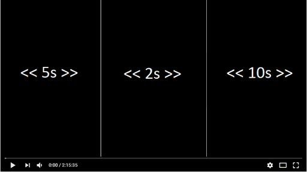
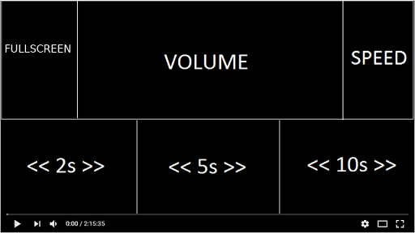
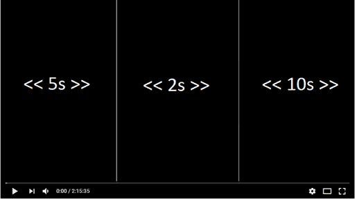
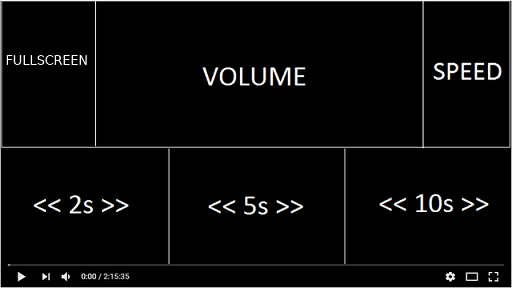